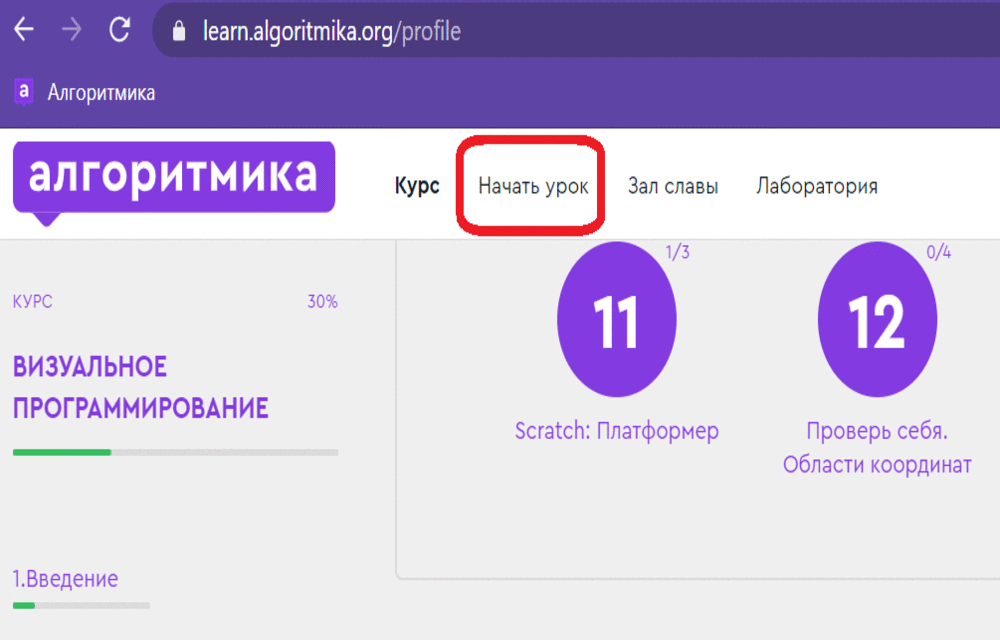
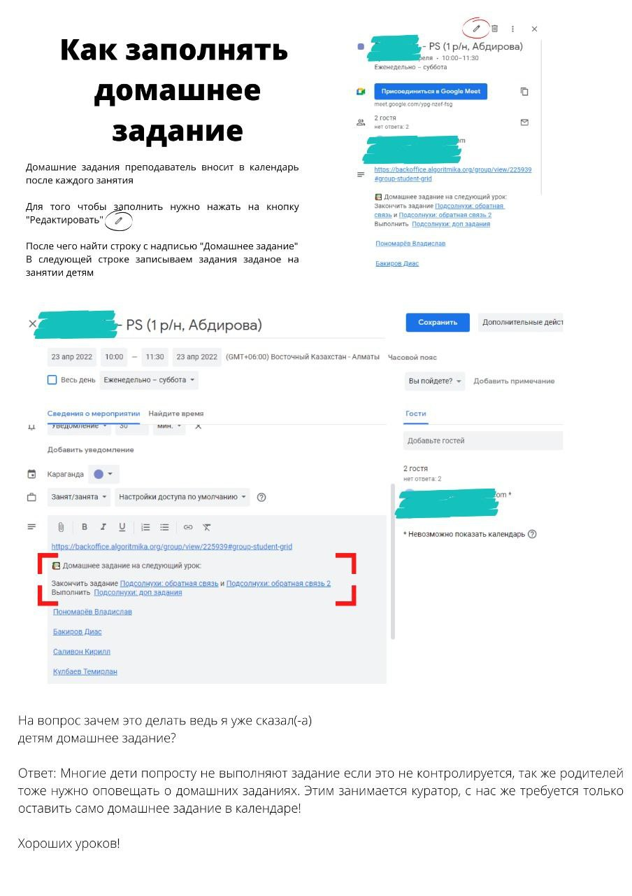

a
Полезные ссылки и дополнительные ништяки
Инструкция по работе на онлайн платформе для детей
Инструкции по AlgoMeet и JitsiMeet
Рекомендуется перед началом онлайн мастер классов или занятий (за 15-30 мин) открыть инструкицю в отдельной вкладке браузера и поделиться им в онлайн-платформе, чтобы при подключении дети могли изучить ее.
Инструкция зациклена и повторяется до тех пор пока ее не остановят. Это сделано для того, чтобы ее могли увидеть те, кто только подключился к онлайн-платформе

Это Gif-инструкция по работе на платформе Algo-meet. Нужно нажать на нее, чтобы открыть в отдельной вкладке и поделиться инструкцией в онлайн-платформе...

Мастер классы
Допы и информацию о мастер классах по отдельным курсам смотрите в разделах самих курсов
ОБРАТНАЯ СВЯЗЬ ПОСЛЕ МАСТЕР КЛАССА:
Моменты, которые нужно указать по каждому ребенку
ОЛиП, ВП, ГД, СС, ПС, ПП:
1. Уровень логики
2. В каком темпе выполнял задания
3. Тянет ли курс. Если не тянет, посоветовать другой курс
4. Был ли опыт программирования
5. Впечатление ребёнка от МК
6. Отметить лучшего ученика в группе
7. Были ли проблемы с интернетом


Домашние задания, обратная связь
Образец заполнения домашнего задания в календаре после урока:
